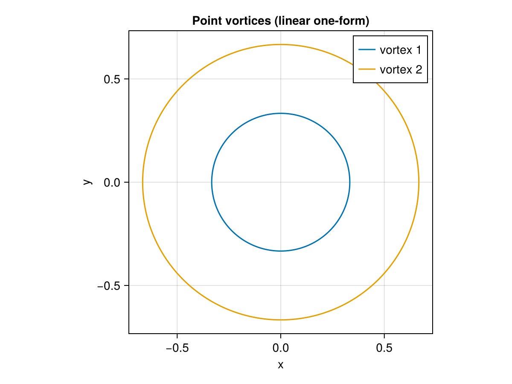

Planar Point Vortices with Linear One-Form
GeometricProblems.PointVorticesLinear — Module
Planar Point Vortices with linear one-form
A pair of interacting planar point vortices described with a linearised one-form — the $S = 1$ limit of the deformed PointVortices model. It is a non-canonical Hamiltonian system whose Hamiltonian is the logarithmic vortex-interaction energy and whose angular_momentum is a conserved quantity. Explicit (odeproblem), implicit/variational (iodeproblem, lodeproblem_formal_lagrangian) and differential-algebraic formulations are provided.
Integrating the default two-vortex problem traces the (co-rotating) paths of the two vortices:
using GeometricProblems.PointVorticesLinear
using GeometricIntegrators: integrate, ImplicitMidpoint
using CairoMakie
sol = integrate(odeproblem(), ImplicitMidpoint())
fig = Figure()
ax = Axis(fig[1, 1]; xlabel = "x", ylabel = "y", aspect = DataAspect(), title = "Point vortices (linear one-form)")
lines!(ax, sol.q[:, 1], sol.q[:, 2]; label = "vortex 1")
lines!(ax, sol.q[:, 3], sol.q[:, 4]; label = "vortex 2")
axislegend(ax)
fig